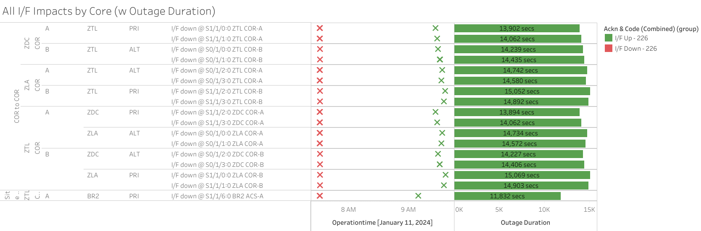
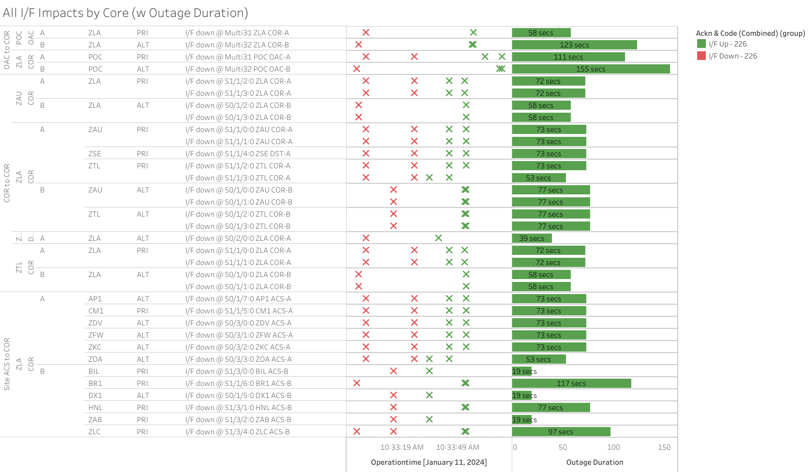

Weekly Highlights 20240110-20240117
1/11-1/16 - ZLA WRE-A Processor Failed
- 1/11 02:26 - ZLA WRE-A to No Data Reported from SE 308 Process Failure; ref LIR 672661432; Reset / Control Powered and restored to Normal at 1/11 03:36
- 1/11 23:58 - ZLA WRE-A failed due to SE 308 Process Failure; WRE has failed to restore after multiple Control Powers; ref LIR 730471624
- 1/16 17:56 - ZLA WRE-A returned to Maintenance
Mode after site tech replaced the DCP; ref LIR
732293924; restored to Normal
at 1/16 18:30
- ZLA WRE-A - 01/12-01/16... - Processor appears to have failed
1/11 - BR1 GUS to Maintenance
- 1/11 17:13 - BR1 GUS to Maintenance to
to re-establish our Monitor and Control System Status reporting functionality; ref LIR 724867924; restored to Backup at 1/11 19:20
1/17 - GUS Switchover for CM1 Maintenance
- 1/17 07:02 - GUS Switchover - BR1 GUS to Primary / CM1 GUS to Backup for troubleshooting SxS; ref LIR 732314224
Various Comm Impacts
* Does not include single-line impacts <30 seconds which do not cause an outage
HNL Comm Events
- 1/10 00:25 - HNL Ring 1 ALT / Ring 2 PRI comms
flapping;
MR-182168 - LUMEN Perform Hardware upgrade designated as essential; ref LIR 726031224; last event cleared at 1/10 09:45 (~750 seconds) - 1/12 05:11 - HNL Ring 1 PRI / Ring 2 ALT comms down hard; remaining lines took a ~20 second hit at 1/12 09:13 causing temporary OUTAGE... ISR pending; ref LIR 730478424
- 1/13 03:36 - Loopback flapping on HNL Ring 2 ALT
for
ISR 0112-0577; Loopback flapping on HNL Ring 1 PRI starting at 1/13 04:05; loops left in place over long weekend... - 1/16 19:40 - HNL Ring 1 PRI / Ring 2 ALT both
cleared after extended outage /
ISR 0112-0577
CM1 Comm Events
- 1/10 06:45 - CM1 Ring 1 ALT / Ring 2 PRI and YFB Ring 2 comms took a ~95 second hit
- 1/10 06:51 - CM1 Ring 1 ALT / Ring 2 PRI and YFB Ring 2 comms down hard; all lines cleared at 1/10 07:17 (~1500 seconds)
- 1/10 07:20 - CM1 Ring 1 ALT / Ring 2 PRI and YFB
Ring 2 comms down hard...
ISR 0110-0835 - FTI working DS3 issue currently at 2nd level.; ref LIR 729355924; all lines cleared at 1/10 14:27 (~25646 seconds) - 1/11 01:31 - CM1 Ring 2 PRI comms flapping; line cleared at 1/11 02:40 (~1250 seconds total)
- 1/13 21:33 - CM1 Ring 2 PRI comms flapping; last event cleared at 1/14 01:54 (~275 seconds total)
- 1/15 18:40 - CM1 Ring 2 PRI comms down for ~30 seconds
- 1/15 22:13 - CM1 Ring 2 PRI comms flapping; last event cleared at 1/16 00:50 (~1600 seconds total)
- 1/16 00:01 - CM1 Ring 1 ALT comms flapping; last event cleared at 1/16 00:31 (~60 seconds total)
- 1/17 08:51 - CM1 Ring 1 ALT / Ring 2 PRI and YFB Ring 2 comms down hard; all lines cleared at 1/17 09:18 (~1625 seconds)
- 1/17 10:15 - CM1 Ring 1 ALT / Ring 2 PRI and YFB Ring 2 comms down hard; all lines cleared at 1/17 10:24 (~621 seconds)
Mexico Sites
- 1/10 13:07 - Reset ZTL Core ports for MTP and MMD Ring 1 to address ongoing flapping...
- 1/10 23:21 - MSD Ring 1 down hard -- OFFLINE; line cleared at 1/11 01:25 (~7450 seconds)
- 1/16 08:35 - All 5x Ring 1 comms from ZTL to Mexico down hard -- OFFLINE; all lines cleared at 1/16 08:41 (~330 seconds)
CDB Comm Events
- 1/11 05:32 - CDB Ring 2 comm flapping; down hard at 1/11 06:45; line cleared after loopback tests at 1/11 07:51 (~3100 seconds)
- 1/11 18:19 - CDB Ring 1 comms down hard; line cleared at 1/11 18:32 (~795 seconds)
- 1/11 18:58 - CDB Ring 1 comms down hard; line cleared at 1/11 19:02 (~221 seconds)
- 1/12 11:23 - CDB Ring 2 comms down hard; ref LIR 673230932; line cleared at 1/12 11:49 (~1543 seconds)
- 1/13 00:37 - CDB Ring 1 comms flapping; last event cleared at 1/13 00:58 (~500 seconds total)
- 1/14 05:39 - CDB Ring 2 comms down for ~152 seconds
- 1/15 18:24 - CDB Ring 2 comms down for ~245 seconds
Other
- 1/11 07:31 - ZTL-ZLA (ref LIR
665767232) and ZTL-ZDC (ref LIR
665772832) COR-COR comms down hard for
MR-180822impacting comms for both Rings; all lines cleared by 1/11 09:36 (~7500 seconds)

- 1/11 10:32 - Major comm event apparently at ZLA Core site affecting both rings; all comms cleared by 1/11 10:34 (~55 seconds)

- 1/11 15:45 - ZLA-ZAU Ring 2 ALT COR-COR comms down hard; ref LIR 729967224; lines cleared after loopback tests at 1/11 15:48 (~180 seconds)
- 1/11 16:49 - ZFW Ring 2 ALT comms flapping; last event cleared at 1/11 16:59 (~150 seconds total)
- 1/11 20:02 - ZFW Ring 2 ALT comms flapping; last event cleared at 1/11 20:11 (~275 seconds total)
- 1/11 22:31 - BET Ring 2 comms down hard; line cleared at 1/11 22:48 (~1000 seconds)
- 1/11 23:25 - OTZ both Rings started flapping --
ISR 0111-1161; ref LIR 673401032; both lines cleared at 1/12 01:37 (~1200 seconds total) - 1/12 02:47 - BET Ring 2 comms flapping; last event cleared at 1/12 03:33 (~80 seconds total)
- 1/12 04:33 - YQX Ring 1 PRI comms flapping; last event cleared at 1/12 04:42 (~180 seconds total)
List of current offline WREs
List of current offline WREs -- ref WAAS Status Monitor
- BIL WRE-B - 01/08-... - Tech conducted WRS0005 and determined Freq Std failed; part on order
All Depot shipments to Mexico are halted until the customs process can be finalized
- MMX WRE-B - 10/2-... - PCU-B failed; need replacement but first need Maintainer Laptops for configuration
- MMX WRE-A - 9/27-... - PCU-A failed; need replacement but first need Maintainer Laptops for configuration
- MTP WRE-B - 7/21-... - PCU-B failing over and over again; input power tested good; disconnected power for other LRUs in WRE-B until PCU-B can be replaced; PCU-B has apparently been stable since 7/25 00:16 (no further power cycles on PCU)
5/11/23-... - MX Ring 2 Satcom Upgrade
MX WAAS Sites comm upgrades in progress:
- 10/27 - Frequentis has delivered to Tijuana, needs to be connected to FTI delivery
- 11/2 - FTI has initiated coordination with Tijuana to install and test direct connection to Frequentis -- MMD Test on 12/6
Further work needed at each WRS site to complete Ring 2 connection upgrades